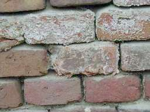
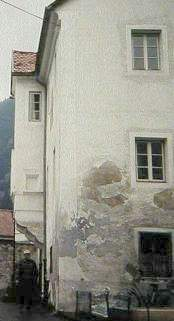

zu Vorbemerkung und Salzquellen (1)
Schadensformen an mineralischen Baustoffen, verursacht durch Salz (nach Arnold u.a., Fallbeispiel Müstair)
Millimetergroße kraterförmige Ausbrüche durch periodische Salzkristallisation an Malflächen (z.B. Nitronatrit)
Salzflaum: Lockere wolle- oder watteförmige Ausblühungen, bis über 1cm dicke Häufchen oder Beläge aus nadeligen und haarförmigen Kristallen (whisker) (z.B. Nitrokalit)
Salzrasen: Lockere Beläge von mehr oder weniger auf Unterfläche senkrecht stehender Whiskerkristalle (z.B. Nitronatrit)
Pulverige Ausblühungen: Weiße, mehlige dichte oder lockere bis flockige Beläge (z.B. an trockener Luft dehydratisierte und zu feinsten Kristallen rekristallierte Hydratsalze wie Thenardit oder Thermonatrit)
Salzkrusten und Salzablagerung: Kompakte, meist fest anhaftende Salzaggregate, Form je nach Entstehungsbedingungen:
Schwer lösliche Salze (z.B. Hydromagnesit, Nequehonit, ...) bilden dichte, harte, bis mehrere Zentimeter dicke Sinterkrusten mit glatter, höckeriger, nieriger oder orangenhautartiger Oberfläche, Querschnitt faserige Struktur mit parallelen oder radial angeordneten Nadeln oder Plättchen, in dünner Form als weißer oder grauer Schleier über Oberfläche wahrnehmbar Leicht lösliche Salze (z.B. Nitronatrit, Nitrokalit, Epsomit) bilden aus gedrungenen Kristallen „körnige“ Krusten, aus nadeligen parallelfaserigen Kristallen „Faserkrusten“
Salzpusteln: Voneinander getrennte, lockere bis kompakte Salzhäufchen oder -höcker, eigentlich kleine Inseln von Salzkrusten, Entstehung häufig in kraterförmigen Trichterchen, wo Salze punktuell kristallisieren
Dunkle, feucht aussehende Flecken: Trockene, sehr feine Sinterschichten (z.B. Hydromagnesit)
Trichterchen: Rundliche, bis 2mm große Vertiefungen, entstehen beim Abplatzen von Farbsplittern. Im Zentrum oft oberflächenparalleles Glimmerplättchen, auf dem Salz bevorzugt kristallisiert
Absandender Putz: Durch Bindemittelverlust im Zuge der Salzkorrosion
Schalenbildung des Putzes: Durch Schichtbildung, evtl in Verbindung mit Frostsprengung im Zuge der Salzkorrosion
Schalen, Altkrusten und Fehlstellen unter Retusche und / oder Überputzung
Wolkige Salzschleier und Kristallisationsgrenzen in verschiedenen Höhen: Fraktionierung der unterschiedlich lösbaren Salzgemische als Ergebnis des Transports, der Aufkonzentrierung, Ausfällung bei Feuchteanstieg an Wand
Schadensmechanismen durch Salzwirkung
Hydrostatischer Kristallisationsdruck (Volumenvergrößerung von gesättigter Salzlösung im Bauteilgefüge bei Verdunstung und Kristallisation), aber wohl keine Salzsprengung als Ergebnis von Kristallisationsdruck im Porenhohlraum, sondern allmähliche Gefügeüberdehnung durch Salzfilm-Bildung durch Anreicherung Kristallisationsbelag in Porenzwickeln (Salzfilm-Modell, Pühringer 1983)
Linearer Wachstumsdruck (Wachstum der Kristallnadeln (whiskers) zur und an Verdunstungsoberfläche
Hydratationsdruck (Volumenvergrößerung bei Phasenübergang in wasserreichere Kristallform)
Thermische Dilatation (Abplatzung von unterschiedlich belasteten und somit sich thermisch unterschiedlich verhaltenden Schichten)
Hygroskopizität (Salzkristalle nehmen in Abhängigkeit von Luftfeuchte Wasser auf und gehen in Lösung über, ein dynamischer Prozeß, der das gesamte Porenvolumen mit Feuchtigkeit auffüllen kann), in Wechselwirkung mit Kristallisation
Feuchteanreicherung in salzbelasteten Baustoffen erhöht Frostbelastung (Krater- und Blasenbildung bei Außenputz)
Einflüsse auf Schadensverlauf am Baustoff durch Salzbelastung und Art der Kristallbildung:
- Vorhandene Schadstoffbelastung aus den Baustoffen selbst
- Porosität des Bauteilgefüges (hohe und wasserdurchlässige Porosität erlaubt schadensfreie Salz-wanderung und Kristallisation an Oberfläche)
- Homogenität Baukonstruktion, Baustoff
- Oberflächennahe innere Schichtbildung
- Äußere Beschichtungen mit verdichtender und wassersperrender Wirkung
- Vorhandene Salzarten:
Leicht lösliche Salze (> 10g/l, z.B. Natriumchlorid, Natriumsulfat, Kaliumnitrat, Magnesiumsulfat, Calciumnitrat-Mauersalpeter/Salpeter/Mauerfraß), hohe Mobilität, Anreicherungszonen verschieben sich im Klimawechsel, hohe Konzentrationen möglich, entsprechend hohe Reaktivität gegenüber Mineraloberflächen, hohes Feuchtespeichervermögen
Mäßig lösliche Salze (0,5-10g/l, z.B. Gips), eingeschränkte Mobilität, annähernd ortsfestes
Anreicherungsprofil, dort Veränderung der Gefügestruktur, teils verminderte Tragfähigkeit des Bauteils:
Bei Steinen geringer Saugfähigkeit Auswaschungshorizonte im regenbeanspruchten Oberflächenbereich, bei hoher Saugfähigkeit
Anreicherungsprofile mit zur Oberfläche hin ansteigender Konzentration
Schwer lösliche Salze (< 0,5g/l, z.B. Calcit, Dolomit, Aragonit), Abscheidung, Versinterung nur an Oberfläche, Anreicherung über Transport löslicher Vorstufen zur Oberfläche, im Inneren dann Bindemittelverlust, an der Oberfläche Verfestigung und Verdichtung, dort bei Klimawechsel erhöhte Scherbelastungen mit nachfolgender Abplatzung, soweit Gefügestruktur überbeansprucht (Forderung nach elastischen Kalkmörteln)
Maßnahmen zur Verminderung bauschädlicher Salze:
Zutreffende Schadensanalyse (durch gesunden Menschenverstand und/oder aufwendige Labortechnik, sie kann mit immer neuen Methoden immer neue Wirkstoffkonzentrate von mehr als 50 ausblühfähigen "üblichen Salzen" ermitteln, deren Ablagerungen, Kristalle und Ausblühung oft bewunderungswürdige Naturschauspiele sind, aber: nur wenige und oft nur extrem teuere und/oder grundsätzlich vergebliche Therapiemöglichkeiten, die von vorneherein meistens feststehen! Lassen Sie sich deshalb im Zweifelsfall die drei letzten "Salzgutachten" des Gutachters zu ausschlagenden / ausblühenden Salzkristallen an der Wand / Mauer im Keller oder der Fassade, im Zimmer oder auf dem Fußoden zeigen, dann kennen sie seine Textdatenbank.)
Was sagt nun das WTA-Merkblatt 4-5-99/D "Beurteilung von Mauerwerk - Mauerwerksdiagnostik" zur Bewertung der in der Labor-Analytik von Mörtelproben/Mauerwerksproben/Proben der Salzausblühung/Kristalle/des Salzausschlags festgestellten Schadsalz-Ionen?| Cloride | < 0,2 M-% | 0,2 bis 0,5M-% | > 0,5M-% |
| Nitrate | < 0,1 M-% | 0,1 bis 0,3 M-% | > 0,3 M-% |
| Sulfate (bez. auf leicht lösliche Sulfate) | < 0,5 M-% | 0,5 bis 1,5 M-% | > 1,5 M-% |
| Bewertung (Maßnahmenbedarf nicht nur von Salzbewertung abhängig) | Belastung gering - Maßnahmen im Einzelfall erforderlich. | Belastung mittel - Weitergehende Untersuchungen zum Gesamtsalzgehalt (Salzverbindung, Kationenbestimmung) erforderlich. Maßnahmen im Einzelfall erforderlich. | Belastung hoch - Weitergehende Untersuchungen zum Gesamtsalzgehalt (Salzverbindung, Kationenbestimmung erforderlich. Maßnahmen erforderlich. |
Die Frage, die sich aber vor eine Schadensanalyse am vordringlichsten stellt:
Also: Modernen Machbarkeitswahn hinterfragen, Haftungsangst überwinden, geschäftsorientierte Empfehlungen erkennen!
Vorsicht:
Entsalzung setzt manchmal auch die Gefügebindung herab, Entfestigung! Testen! Nicht jedes Salz ist schädlich, auch Kalkkarbonat
/ Kalkstein / Kalksinter ist übrigens ein Salz: Calcit! Von den gegebenen Entsalzungsmechanismen werden vorwiegend die leicht
löslichen, mobilen Salze, weniger die abgebundenen fest sitzenden Salz- und Sinterkrusten betroffen.
Grundsätzlich gibt es drei Transportmechanismen der Salzwanderung aus Lösungen in porösen Bauteilen:
1. Diffusion (Konzentrationsausgleich zwischen verschieden konzentrierten Lösungen)
2. Konvektion (Transport über Strömungsvorgänge durch Druckausgleich)
3. Elektromigration (Salzionen in Lösung transportieren bei Spannungsanlegung elektrische Ladungen an jeweiligen Gegenpol)
Daraus folgen grundsätzliche Verfahren zur Feuchte- und Salzverminderung in belasteten Baustoffen/Räumen:
1. Diffusionsverfahren für langsame Salz-Dekonzentration äußerer Schichten,
- Opferputzverfahren (Opferputz bzw. offenporiger Putz, z.B. reiner Luftkalkmörtel, der die Feuchte- und Salzwanderung nach außen zuläßt, abschlagen in kalt-trockener Witterung)
- Kompressenverfahren (transportiert aber außen anliegende Salze zunächst teilweise auch ins Bauteilinnere, deswegen sollte
man die 2-Phasen-Technik mit schwundsicherem Kompressenmaterial (z. B.: Bentonit/Sand/Zellulose-Mischung, schwundrißmindernde
Armierung bei dicken Lagen vorteilhaft, Spezial-Zellulose-Beschichtung) und qualifizierten Auffeuchtungsvorgängen vor dem Einsatz
der Kompressen anwenden. Hauptbelastung ist meist im Fugenbereich, hier muß die Entsalzung ansetzen und bringt hier auch die beste
Leistung. Dicke teure Pampen über Steinflächen sind meist nicht sinnvoll. Und: Bei üblichen mineralhaltigen Kompressen
besteht Verschmutzungsgefahr für den saugfähigen Untergrund, eine geeignete kapillaraktive Schutzschicht kann die Verschmutzung
verhindern.
Oft bleiben Belastungsränder in der Fläche als Rückstand, wichtig ist deshalb das maximale Saugvermögen des
Kompressenmaterials (Nachweis an Beprobung empfohlen, inkl. Vorzustandsanalyse). Kompressenentsalzung setzt die Wiederholung der
Kompressentchnik voraus, das kann ins Gehen und bei Kompressenputzen durch ständig neues Putzabhacken auch die eigentlich
zu schützende Bausubstanz beschädigen. Beachten: Es gibt sehr große Unterschiede in Preis, Technik und
Material - das Beste / Verrückteste ist für viele betroffene Objekte mit unvorsichtigen Bauherren / Bauherrenvertretern
(Kirche! Staat!!) gerade gut genug!)
- Injektionskompressenverfahren für Ziegelmauern (zerstörender Eingriff / Injektagebohrloch)
- Auswaschungsverfahren, Spülung von außen (Feuchtebelastung, geringer Feuchteeintrag bei Dampfstrahltechnik, geringe Feuchtebelastung in Umgebung durch Sprüh-Saug-Technik)
2. Strömungsverfahren, z.B. Vakuum-Fluid-Verfahren (geeignet, wenn mittlerer Porendurchmesser über 3 Mikrometer, bisher überwiegend Versuchsverfahren, bringt sehr viel Feuchte in Bauteil)
3. Elektro-/Magnetokinetische Verfahren (um es harmlos anzudeuten: mehr als umstritten, setzt nachströmende aufsteigende Feuchte (ein Unding) voraus, Wirksamkeit abhängig von Salzkonzentration etc.pp.).
Außerdem möglich:
4. Natürliche Salzminderung durch Abfallen / Abregnen von Kristallen vor allem leicht löslicher Salze an bewitterter Fassade. Bei Kalkmörtel und -anstrich sowie mäßiger Belastung evtl auch ohne Gefügeschädigung möglich.
5. Mechanisches Verfahren durch feuchte bzw. trockene Abnahme von Salzkristallen, ggf. unterstützt durch geeignete Ausheiztechnik der salzbelasteten Restfeuchte.
6. Einschränkung der schadstoffaktivierenden Übernutzung historischer Räume / Gebäude.
7. Thermische Verfahren, z. B. Raumluft-Entfeuchter; Hüllflächen-Temperierung anstelle Raumluftbeheizung, eine denkbare Maßnahme gegen den wohl häufigsten Schadensfall, in dem blanke Kondensation und hygroskopische Feuchteaufnahme den Schadensmotor am laufen hält.
8. Chemisches Verfahren, Immobilisierung, z.B. „Barium-Methode“(wandelt Calciumsulfat (Gips) in Putz- und Malschicht in stabiles Bariumcarbonat um), sonstige Umwandlung von leichtlöslichen in schwerlösliche Salze (kann unvorhersehbare Schäden verursachen), alle chemischen Verfahren giftig und nicht gegen das gesamte vorliegende Salzspektrum wirkend.
9. Horizontalsperre durch Injektagematerialien (zerstörerischer Eingriff, Materialien teils selbst feuchte- bzw. salzhaltig, keine Langzeiterprobung, erhöhen Kondensatanfall durch höhere Wärmeleitfähigkeit, vollkommen sinnlos bei nur angeblich "aufsteigender" Feuchte)
10. Sonstige konstruktive Verfahren:
- Doppelwand vor verseuchte Wand setzen (Vitruv), Schalenzwischenraum entlüften, Außenwand
- zusätzlich temperieren (vgl. thermische Verfahren)
- Schalenmauerwerk mit innerer gering kapillar leitfähiger Füllung (Mittelalter)
- Horizontalisolierung (teuer, gefährlich wg. Erschütterung, Bauteilverlust, unkontrollierbare nachfolgende Kristallisationsprozesse der trocknenden Bauteile, setzt Horizontalfuge voraus, und im übrigen gegen Kapillarfeuchte so gut wie wirkungslos - warum? Siehe diesen Link).
Beachten: „Aufsteigende Feuchte“ ist meist die falsche Interpretation des Schadensbildes: Kapillartransport ist nur von Grob- in Kleinporengefüge möglich, Mörtelschicht verhindert Feuchtetransport zwischen Steinen, aufsteigende Feuchte konnte in frei bewitterten Mauerkonstruktionen bisher noch nie "simuliert" werden (10-Jahresversuch in Holland), ein Beleg für deren "Unmöglichkeit".
- Abdeckung von feuchteempfangenden Bauteilen (Dach, Gesims, Sohlbank, Schutzdach über Fassadenpartie...), aber keine Hydrophobierung (behindert Austrocknung und baustofftypische Dehnung, unterschiedliche Eindringtiefe und Wirkung an Stein und Fuge, setzt umfangreiche Qualitätssicherung voraus, die mit bauzerstörenden Probeentnahmen verbunden ist).
- Entfernen ungeeigneter dichtender Beschichtungen im Schadensfall (kunststoff-"vergütete" Farbsysteme, Silikatfarben), Austausch gegen Kalkanstriche.
- Geeignete Wärmeversorgung (Hüllflächentemperierung) kondensatgefährdeter Bauteile
- Sperr- und Sanierputz, aber (was Ihnen die Baubranche und Ihr Billig-Planer gerne verschweigt):
-- Eigengehalt an löslichen Salzen im Zementanteil erhöht Salzbelastung am Bauwerk, die C3A-Bestandteile reagieren mit dem Sufatgehalt des Untergrunds zu Treibmineralien mit ca. 40-facher Volumenvergrößerung. Folge: Putzabsprengung, Rißbildung, Untergrundverseuchung und -zerstörung - ganz im Gegensatz zu erhöht mikroporösen Luftkalkmörteln.
-- Wirkung als Oberflächenversiegelung, verlagern Verdunstungs- und Kristallisationshorizont in höhere sockelferne bzw. mauerwerksoberflächennahe Zone, dadurch Gefährdung bisher intakter Bauteile (gilt auch unter Bodenniveau, an historischen Gebäuden gehört Sockelzone zur Horizontalisolierung, sie übernimmt als Soll-Verschleißzone Entfeuchtungsaufgaben)
-- Hydrophobe Zusätze unterbinden Feuchte- und Salzwanderung in Sanierputz, verhindern Verlagerung des Verdunstungs- / Kristallisationshorizonts aus dem belasteten Bestand in den „Sanier“-Putz: Schadstoffanreicherung an der Kontaktzone zum Altbau
-- Nur dampfförmiger Transport der Feuchte möglich, „99,9“% der Feuchtewanderung findet aber normalerweise in flüssiger Phase statt! 1Liter Wasser = 1Kubikmeter Dampf mit 1000 x höherem Porenraumbedarf, d.h. Dampftransport durch Porensystem ist viel langsamer als kapillar flüssiger Wassertransport.
11. Sonstige Verfahren zur Vermeidung bzw. Verringerung des Schadstoffeintrags- und Transports
12. Hinnahme des salzbedingten Alterungsgeschehens, fordert Bewußtseinswandel
Allgemeine Verfahrenshinweise:
- Möglichst trockene Arbeitstechnik (In Renaissance z.T. Ablösung der Fresko- u. Seccomalerei auf Wand durch feuchteempfindliche Ölmalerei)
- Verseuchte abgenommene Bauteile unverzüglich entsorgen
- Möglichst trockene Reinigungstechnik: Mechanische Reinigung anstelle Feuchtreinigung, Heißdampf anstelle Wasserstrahl
- Möglichst trockene Technik zur Salzverminderung: Dünnere, schnell trocknende Kompressen anstelle Dauerkompressen, Heißdampf anstelle flüssiges Wasser zur Ausspülung schädlicher Salze
- Stillegung / Verminderung externer Feuchte- und Salzquellen
- Frischmörtelschutz vor einwandernen Salzen aus Untergrund durch gründliche Reinigung salzbelasteter Zonen, Ausräumen der Fugmörtel und Vornässen mit essigsaurer Tonerdelösung
- Einsatz schadstoffarmer Baustoffe (Kalkhydrat, salzarme Ziegel, ...), sonst nur nach Volldeklaration der Inhaltsstoffe, Zusätze, Wirksamkeitsgrenzen und Gegenindikationen im Bestand
- Typische Schadensfälle von konkurrierenden Anbietern wechselseitig aufklären, Erfahrung neutraler Fachleute (Denkmalamt, wissenschaftlich arbeitende Institute, Baustofflabors (Vorsicht, oft von Industrieaufträgen abhängig!), Sachverständige) abfragen.
Vorsicht:
In Ziegeln werden zunehmend undeklariert schwermetallhaltige, salzreiche Industrieabfälle recycelt,
Unbedenklichkeitserklärung zum Rohstoff vom Hersteller abfordern!
Traßkalkmörtel und Traßzementmörtel enthalten salzreiche und festigkeitsfördernde undeklarierte Zusätze von Zement und hochhydraulischem Kalk in schadensfördender Menge. Die Römer verwendeten Traß nur in wasserbelasteten Bausituationen (Hafenbau, Wasserbecken in Thermen, Abwasserleitung und Aquädukt). Der übliche Hydraulefaktor im alten Mauer- und Putzmörtel war niedriggebranntes Ziegelmehl bzw. Ziegelsplitt (darin Kaolinit als Hydraulstoff), der sich auch heute gegenüber anderen Hydraulezutaten als optimal erweist (Forschungsergebnis "Smeaton-Projekt", England, Untersuchungen Uni Karlsruhe, Prof. Althaus).
Einsatz offenporiger und kapillar wirksamer Baustoffe (keine feuchtesperrende Putze und Anstriche), keine Oberflächenverdichtung
Gipszugabe oder verwitterungsbedingte Gips-/Sulfatbildung in historischen Mörteln und Putzen regelmäßig anzunehmen, Folge: Unberechenbare Reaktionen mit Alkalien aus Zement- und Traßanwendung (z.B. Ettringit-Bildung mit bis zu 40-facher Volumenvergrößerung)
Baustoffe mit löslichen Alkalien (Zement, Traß, Wasserglas!) bringen zusätzliche Schadsalze ein und wandeln weniger schädliche Salze (leicht lösliche, stark hygroskopische, selten kristallisierende wie Nitrate (Mauersalpeter), Chloride des Calciums und Magnesiums) in viel schädlichere (schwerer lösliche, gering hygroskopische, häufig kristallisierende wie Nitrate, Chloride des Natriums und Kaliums) um.
Nachbehandlung durch Ausspülen bzw. Kompressenanwendung bei unvermeidbarem Einsatz von salzbelasteten Reinigungs- und Restauriermaterialien, dabei Verfahrens- und Ergebniskontrolle!
Feuchtegeeignete Baukonstruktionen (keine sperrenden, hydrophobierenden, dichtenden, nur dampfdiffusionsoffene aber nicht kapillaraktiven Fassadenbeschichtungen)
Ein letzter Tipp: Wer Ihnen die typische Armada der Chemiewaffen und Bauzeitbomben gegen einige feuchte Flecken am Mauerwerk empfiehlt, muß nicht Ihr Freund sein - auch wenn die Beratung nichts oder die Planung deutlich unter Mindestsätzen kostet. Wie falsche Baustoffe den Weg genau an Ihr Bauwerk finden, lernen Sie hier.
Verwendete Literatur:
Hrsg. Michael Petzet, Salzschäden an Wandmalerei, Arbeitsheft 78 des Bayer. Landesamtes für Denkmalpflege,
München 1996
Hrsg. P. Friese, H. Venzmer, Bauwerksabdichtungen, Heft 7 der Schriftenreihe des Feuchte und Altbausanierung e.V., Verlag für
Bauwesen, Berlin 1996
Hrsg. H. Venzmer, Bautenschutzmittel, Heft 8 der Schriftenreihe des Feuchte und Altbausanierung e.V., Verlag für Bauwesen, Berlin
1997
Forschungsergebnisse EuroLime-Forum 1993 (Kopenhagen) und 1998 (Mainz)

Bildlinks zur "Aufsteigenden" (??) Feuchte